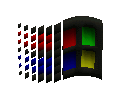
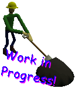

What is tapegro
Tapegro is a glorious framework you can use to create games in Javascript. It is a standalone program, which is runs your game code like a script. At its core, it is powered by Allegro and Duktape. Allegro is used for all interactive multimedia needs - graphics, audio, input, etc. Duktape is used to run the Javascript code you write your game with. Tapegro is to Javascript similar to what Love2d is to Lua. It is free and works on Windows, Linux and MS-DOS. In particular, MS-DOS games can now be had everywhere due to DOSBox.Tapegro is a product of Brazil! And may rob you at gunpoint at any time!
|  | ||
| Windows | MS-DOS | Linux |
|---|
Features
Due to the usage of the Allegro library, Tapegro includes several useful features such as:- Load and display PCX, TGA, BMP and LBM image files
- MIDI file playback for music
- PCM samples for sound effects, with WAV file support
- Several graphic blending modes
- 8, 16 and 32bit color modes
- Read and write configuration files
- Polygon rendering, shaded or textured
- 3D routines
- Pack and datafile support
- Sprite system, display several frames, flip, rotate, and scale, batch mode
- DPAD or analog + 12 buttons per player, configurable to any keyboard or joystick combination
- Developer console
- Generate and play PCM samples, and save as WAV files
- Tile map rendering
- Automatic pixel perfect zoom, no stretching
- Networking support for multiplayer under UDP or IPX
- PNG and GIF support, including animation for the latter - now available in Tapegro 2.0
- MD2 3D model format, as seen in Quake 2
- Stand-alone configuration program
- Hacky DLL interfacing support
Getting started
Read the tutorial.You can check the example games.
Alternatively, you may want to jump straight to the Javascript documentation and the configuration file documentation.
Changes list
| Date | Description |
|---|---|
| 2018/06/16 | WriteFile and WriteTextFile added, some documentation updated |
| 2018/06/15 | Implemented CreateSubBitmap and GridPathfindPF stub |
| 2018/06/15 | Fixed max MIDI velocity mistake on MIDI page |
| 2018/06/13 | Fixed lack of documentation for MaskedStretchBlit |
| 2018/01/15 | Replaced goatse with zombo |
| 2017/12/30 | Now offering pat2dat.zip |
| 2017/12/14 | Added garbage collection entry to tutorial |
| 2017/12/14 | Improved Asteroids example, now runs well on DOS |
| 2017/12/13 | Added multiline storage to developer console |
Where to find the author, et al
You are welcome to look for kdrnic at #ludumdare or #dosgameclub in irc.afternet.org, where you will also find other gamedev and MS-DOS gaming enthusiasts.License
Tapegro is copyright ALL YEARS Kdrnic.Tapegro is freeware and can be distributed freely as long as it is not modified.
When you use Tapegro you do so at your own risk. The author is not responsible for any loss or damage resulting from your use or misuse of this software.
Windows
See also the MIDI page for a substitute to the awful Microsoft wavetable synthesizer.
MS-DOS
Note that Tapegro under MS-DOS has some peculiarities. See the MS-DOS page.You may want to develop and/or distribute your Tapegro game under DOSBox, a free DOS emulator, or under a MS-DOS virtual machine. Again, see the MS-DOS page.
Linux
See also the MIDI page for a substitute to the common lack of installed MIDI support under Linux.Please note that I haven't prepared a Linux build yet, so the link below leads to zombo instead.
|  | Tapegro, and this page, are work in progress! Return soon for more! |